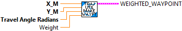

Creates a weighted waypoint data structure from individual inputs.
Inputs are all SI units (Meters, Radians)
Inputs:
- X_M -- X position (meters)
- Y_M -- Y position (meters)
- Travel Angle -- Desired direction of travel (Radians)
- Weight -- Weight value -- This is an indication of how straight the robot is going when it reaches a waypoint. Larger values specify less curvature at the waypoint.
Outputs:
- WeightedWaypoint -- Data cluster containing created waypoint
Creates a weighted waypoint data structure from individual inputs.
Inputs are all ENG units (Feet, Degrees)
Inputs:
- X_M -- X position (Feet)
- Y_M -- Y position (Feet)
- Travel Angle -- Desired direction of travel (Degrees)
- Weight -- Weight value -- This is an indication of how straight the robot is going when it reaches a waypoint. Larger values specify less curvature at the waypoint.
Outputs:
- WeightedWaypoint -- Data cluster containing created waypoint. The created waypoint uses SI units which are compatible with the internals of the trajectory functions.

Imports a Trajectory from a PathWeaver-style JSON file.
Parameters:
- FileName - File name string of the json file to import from
- Error In - Error cluster (not used)
Returns:
- Trajectory - Trajectory data structure
- Error out - Returned error cluster

Exports a Trajectory to a PathWeaver-style JSON file.
Parameters:
- Always Overwrite -- This optional terminal, if TRUE, will not prompt on WINDOWS to overwrite an existing file. On the RoboRIO the file is always overwritten. ( Default: False )
- Trajectory - Trajectory data structure
- FileName - File name string of the export json file
- Error In - Error cluster (not used)
Returns:
- Error out - Returned error cluster